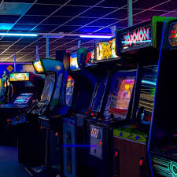
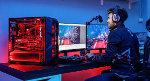

Los videojuegos tienen sus raíces en experimentos tecnológicos y matemáticos. En 1952, Alexander Douglas creó OXO, una versión digital del juego tres en raya.
En 1958, William Higinbotham diseñó Tennis for Two, un juego de tenis en un osciloscopio. Sin embargo, el primer videojuego verdaderamente influyente fue Spacewar! (1962), desarrollado por Steve Russell, que introdujo mecánicas de combate espacial y sentó las bases para futuros juegos.
Durante los años 60, los avances en computación permitieron la creación de juegos más sofisticados en universidades y laboratorios. Estos primeros videojuegos eran experimentos académicos y no estaban disponibles comercialmente.
En 1971, Nolan Bushnell y Ted Dabney fundaron Atari, lanzando Computer Space, el primer videojuego arcade comercial. Sin embargo, el gran éxito llegó en 1972 con Pong, un juego de tenis de mesa que se convirtió en un fenómeno mundial.
Durante los años 70 y 80, los arcades dominaron la industria con títulos icónicos como:
Los arcades se convirtieron en centros sociales donde los jugadores competían por puntuaciones altas, impulsando la cultura del gaming.
La llegada de las consolas domésticas cambió la forma en que las personas jugaban. La Atari 2600 (1977) fue una de las primeras consolas populares, permitiendo jugar en casa con cartuchos intercambiables.
En 1985, Nintendo lanzó el Nintendo Entertainment System (NES), que revitalizó la industria tras la crisis de los videojuegos de 1983. Algunos juegos clave de esta época incluyen:
En los años 90, la competencia entre Nintendo, Sega y Sony llevó a avances tecnológicos:
La llegada de los gráficos en 3D con Nintendo 64 (1996) y PlayStation revolucionó la industria, permitiendo mundos más inmersivos.
Desde los años 2000, los videojuegos han evolucionado con gráficos hiperrealistas, mundos abiertos y experiencias en línea. Algunos hitos clave incluyen:
Hoy en día, los videojuegos abarcan desde títulos AAA hasta juegos independientes, con tecnologías como realidad virtual, inteligencia artificial y streaming en la nube.
